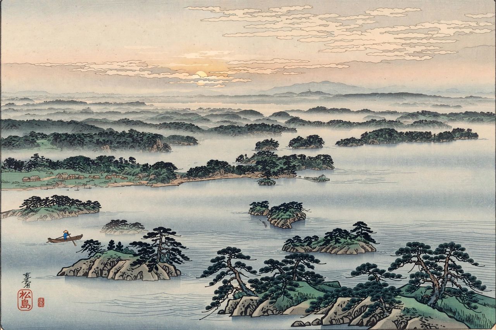

From Wikipedia, the free encyclopedia
| Author | Matsuo Bashō |
|---|---|
| Language | Classical Japanese |
| Genre | Haibun (travel diary) |
| Journey | 1689 |
| Published | 1702 (posthumous) |
| English title | The Narrow Road to the Deep North |
Oku no Hosomichi (奥の細道, "The Narrow Road to the Interior" or "The Narrow Road to the Deep North") is the masterpiece of the Japanese poet Matsuo Bashō (1644–1694). Written in the haibun form — lyrical prose interspersed with haiku — it records a journey Bashō made with his disciple Kawai Sora through the northern provinces of Honshu in 1689.

Matsushima, one of the famous places (utamakura) Bashō visited.
Selling his hut in Fukagawa, Edo, Bashō set out in the spring of 1689, aged 46 and in uncertain health; he expected he might die on the road. Over roughly 150 days the travellers walked some 2,400 kilometres (1,500 miles), visiting sites famous from classical poetry (utamakura): the barrier at Shirakawa, Matsushima's pine-clad islands, the ruins of Hiraizumi where the Northern Fujiwara had fallen, the mountain temple of Yamadera (Risshakuji), the Mogami River, and the shrines of Dewa, before Bashō turned south to Ōgaki in Mino Province.
Bashō revised the account for years; it was published in 1702, after his death. Its opening is among the most famous passages in Japanese literature: "The months and days are the wayfarers of eternity. The years that come and go are also travellers." At Hiraizumi he wept over the vanished glory of the Fujiwara and wrote natsukusa ya / tsuwamono-domo ga / yume no ato — "summer grasses — / all that remains / of warriors' dreams". At Yamadera, the stillness inspired shizukasa ya / iwa ni shimiiru / semi no koe ("such stillness — / sinking into the rocks, / the cries of cicadas"). The prose moves between Chinese and Japanese literary allusion, diary plainness and philosophical reflection, embodying Bashō's late ideals of sabi (lonely beauty) and karumi (lightness).
Oku no Hosomichi is a cornerstone of Japanese literature, memorised in schools and retraced by generations of travellers; Sora's own diary, rediscovered in 1943, lets scholars compare the record with Bashō's artistic reshaping. Donald Keene and Nobuyuki Yuasa (whose translation appeared as a Penguin Classic in 1966) carried it to English readers.